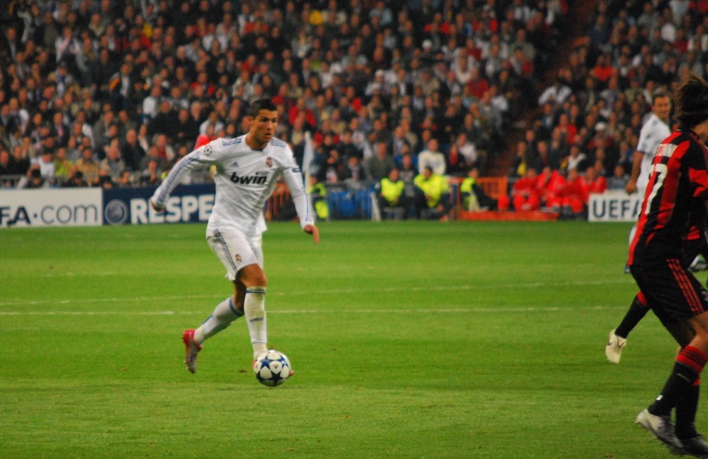
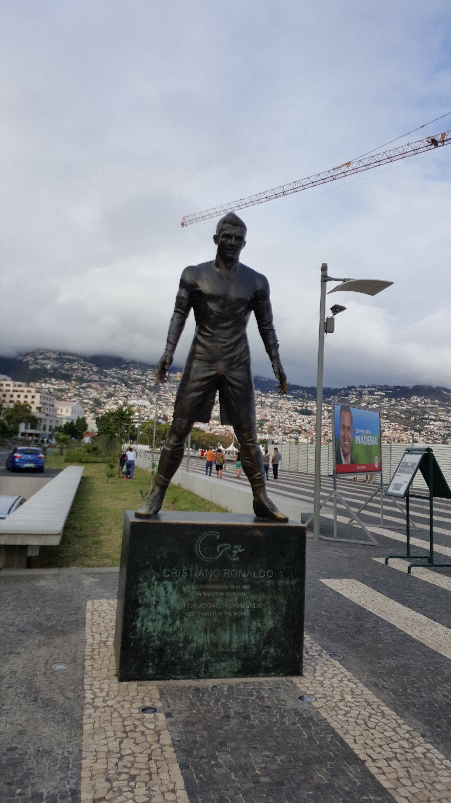
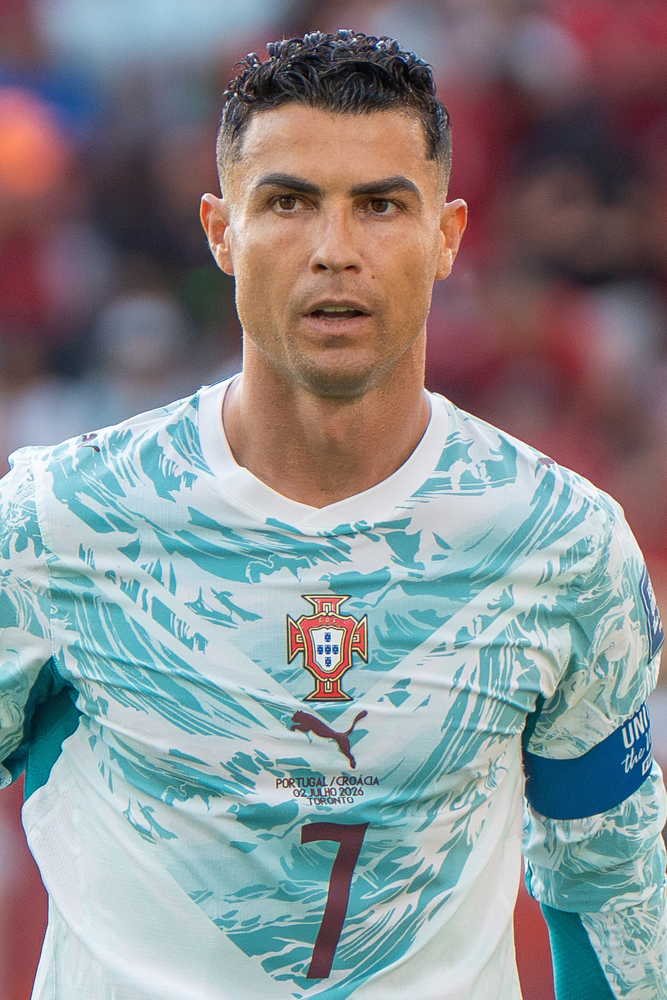

The Final Chapter
THE LEGACY
Ek chhote island ke garib ghar se nikla ladka — duniya ka sabse zyada follow kiya jaane wala insaan, football ka sabse bada goalscorer, aur un logon ke liye misaal jo aaj bhi sapne dekhte hain.




5Ballon d'Or
5Champions League
450Real Madrid Goals
233Portugal Caps
146Portugal Goals
976+Career Goals
6World Cups Khela
35Saudi League Record Goals
Is kahani se seekh
- 01Shuruaat kahan se hui — ye matter nahi karta. Madeira ke garib ghar se duniya ke top tak mumkin hai.
- 02Sapne ke liye qurbani: 12 saal ki umar mein ghar chhodna, jo aasaan nahi tha.
- 03Mushkil mein bhi mat ruko: dil ki bimari ke baad bhi woh wapas aaya.
- 04Haar se seekho: Euro 2004, Qatar 2022, WC 2026 — har haar ke baad woh aur taiyar hua.
- 05Mehnat ka koi shortcut nahi: training, neend, khana — har cheez par dhyan.
- 06Insaan bhi hai: vivaad, galtiyan aur dukh, sab uski kahani ka hissa hain.
- 07Umar ek number hai: 41 saal ki umar mein bhi league title aur World Cup.